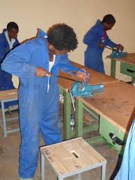

EVELYNE SENIOR SECONDARY SCHOOL
"together we can"
| HOME | ACCADEMICS | SPORTS | PROJECTS | ONLINE APPLICATION FORM |
DIFFERENT PROJECTS AT OUR SCHOOL
We all believe that for any outstanding activity to take place there must be a specific project carried out in order to make a certain work or business run and develop faster.


A project is any piece of work that is undertaken or attempted. It is now four years since the National Curriculum Development Centre declared the new mode of studying at the ordinaly secondary level. Under the new curriculum, our school decided to provide all the materials needed by the learner to perform their projects successfully. In these projects, learners develop the following skills on practicing;
Listening skills
Reading skills
Collaborating skills
Critical thinking
All these skills help the learner to get marks which are submited to Uganda National Examination Board (UNEB) and here the learner is contributing on his\her 20 marks that are required by UNEB.
All the project works produced by our learners are of a high quality and they are in place to solve any problem that is faced by the community.Here, learners aided with the teachers look and observe the conditions in the society.After all this is done, some problems are identified and this forces the learners to look for the solutions for the problems in the society. It is from the problem identified the project bases from and straight away, each learner must produce a piece of work to be presented as the solution to the identified problem.
SOME PROJECT PIECES MADE BY OUR LEARNERS
| project | problem solved frome the community |
|
A piece of cloth from cotton by art students |
This piece of cloth was designed from cotton with different paints to give it a nice colour as you see it.This was designed to help all the tailors get a quality cloth material at free of charge. |
 Local plastic folower vescle |
As you see, that flower vescle was made localy using a plastic bottle and this helped us to reduce on pollution around our school. Many empty plastic bottle were dumped around the school and this could cause soil pollution. When our learners went and collected all these bottles, pollution in our community is reduced |
| prof. Prevantony Ssamula @ Copyright |
| you can find us on; |
|
|
|
|
|
|
|
|